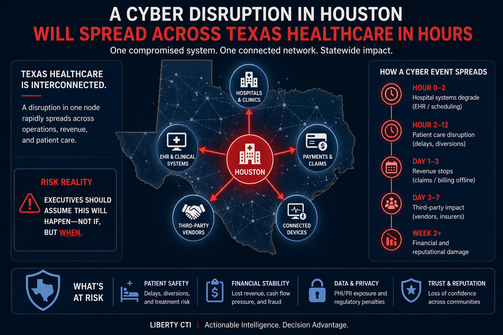

Sector Intelligence
Texas Healthcare Cyber Risk Is Strategic, Regulatory, and Clinical
Texas healthcare sits at the intersection of patient safety, regulated data, public trust, and geopolitical spillover. The Texas Medical Center serves more than 10 million patients annually, while ransomware, clearinghouse disruption, medical device supply-chain pressure, and nation-state interest turn cyber risk into a strategic intelligence problem. For healthcare boards and general counsel, the accountability question is whether leadership can show it understood the warning and documented action before a crisis forced the response.

Questions for Leadership
Could your leadership answer these today?
A risk rating does not tell a board what to decide. These questions do. Where the answer is unclear, untested, or undocumented, there is a decision gap.
- Which external dependency could change this decision?If a clearinghouse, hosted EHR, or key device supplier goes down, how long can clinical operations and cash flow hold?
- Who owns escalation?Who decides to divert patients or move to downtime procedures, and who is told first?
- What warning threshold changes posture?A regional hospital hit, a clearinghouse outage, or activity against medtech suppliers during geopolitical tension: which one moves you?
- Which assumption has not been tested?That downtime procedures sustain care and revenue for weeks, not days.
- What must be documented?What leadership knew, when it decided to divert or notify, and why, for regulators, insurers, and the board.
- Has this decision ever been rehearsed?A diversion decision across a regional system with several hospitals affected at the same time.
- What happens if the disruption spreads into another sector?If a grid or cloud disruption lands at the same time, which clinical and payment functions fail together?
What Adversaries Are Targeting
Crown Jewels of Texas Healthcare
Healthcare adversaries target operational availability, not just data. The pressure in a hospital ransomware attack comes from the inability to absorb downtime, the regulatory burden that follows, and the patient safety consequence created by delayed care.
ED, ICU & Surgical Scheduling Systems
Emergency department operations, intensive care workflows, and surgical scheduling represent the life-safety dimension of healthcare cyber risk. Patient diversion during system downtime creates quantifiable harm, and a uniquely powerful coercion instrument.
EHR Integrity & Patient Identity
Electronic health record systems underpin clinical decision-making, medication management, and patient identity matching. Compromise here creates cascading errors with patient safety implications that extend far beyond the immediate cyber event.
Claims Submission & Clearinghouse Dependencies
Revenue cycle disruption, as demonstrated by Change Healthcare, converts a cyber event into a provider cash flow crisis. Hospitals operating on thin margins face existential solvency pressure when claims cannot be submitted or reimbursements cannot be received.
PHI / PII, Monetized & Weaponized
Protected health information commands premium value in criminal markets because it combines medical, financial, and identity data in a single record. PHI breach creates fraud exposure for patients that persists for years, including medical identity theft that endangers future care.
Vendor & Clearinghouse Ecosystem
Billing services, MSPs, transcription vendors, device vendors, and clearinghouses create a complex third-party attack surface. The Oracle Health legacy Cerner incident illustrates how a single upstream vendor breach can propagate downstream to multiple provider organizations with delayed notification.
Breach Response & Compliance Capacity
Texas healthcare organizations face layered reporting obligations, HIPAA/HHS OCR, Texas ITEPA, and sector-specific statutes. Incident response capability that fails under pressure creates regulatory exposure that compounds the operational impact of the breach itself. A review of public disclosures across Texas health systems shows the same pattern seen elsewhere: documented compliance programs, HIPAA and ITEPA reporting processes, and board-level oversight language, none of which by itself confirms whether leadership understood a specific threat scenario before it forced a decision.
Priority Threat Actors
Who Poses Risk to Texas Healthcare
Healthcare threat actors include criminal ecosystems seeking monetization and nation-state-linked actors using healthcare infrastructure for coercive signaling. Shared vendors create exposure across both populations.
Ransomware Groups (ALPHV/BlackCat, Qilin)
Financially motivated actors treat healthcare as a premium target because of the operational pressure created by downtime and the monetization value of PHI. Double and triple extortion tactics, encrypt, exfiltrate, and threaten public disclosure, are now standard methodology.
IRGC-CY / Handala
Iran-linked Handala claimed activity involving Stryker's medical device supply chain in March 2026. The claim highlights the risk that high-visibility healthcare suppliers with downstream hospital dependencies can become targets during geopolitical tension.
PRC-Affiliated APT Actors
Nation-state-linked actors can use shared vendor and infrastructure dependencies to reach U.S. healthcare, not only direct hospital intrusion. Pre-positioning activity in healthcare networks provides persistent intelligence collection capability and potential contingency pressure aligned to broader critical infrastructure targeting.
Insider Misuse
Employee and contractor misuse of privileged access to patient data and benefits systems represents a documented and recurring threat. Texas HHSC's 2025 privacy breach, affecting Medicaid and SNAP recipients, was caused by insider employee misuse, illustrating that the perimeter is not always the attack surface.
Incident Record
Texas Healthcare: What Has Already Happened
The following vignettes are drawn from primary notices, government records, and provider disclosures. The pattern is consistent: ransomware, third-party clearinghouse dependency, and insider misuse, with Texas providers and patients bearing the operational consequence.
- Jan–Mar 2026Nacogdoches
Nacogdoches Memorial Hospital, 2026 Cyberattack
Nacogdoches Memorial Hospital identified a cyberattack on January 31, 2026, with activity dating to January 15. Patient data impact was reported through the Texas Attorney General substitute notice pathway. The incident represents the most recent documented Texas hospital cyber event in Liberty CTI's tracking baseline.
Texas operational impact: Large-scale PHI/PII exposure risk; downstream fraud and medical identity theft risk; reputational and compliance impact for a regional Texas hospital serving a rural population with limited alternative care options.
Attribution: Not publicly attributed in notice pathway
- Jan 2025 / Apr 2025 UpdateAustin
Texas HHSC Privacy Breach, Insider Misuse at Scale
Texas Health and Human Services Commission disclosed a privacy breach caused by employee misuse, improper access to benefits recipients' data. An April 2025 follow-on release expanded the affected population estimate. The incident impacted Medicaid, SNAP, and other benefits recipients, state residents at their most vulnerable.
Texas operational impact: Direct impact to Medicaid and SNAP recipients; fraud monitoring needs; trust and governance implications for state health administration. The incident illustrates that the most consequential healthcare breaches are not always external attacks, insider access governance is a primary control plane.
Attribution: Insider employee misuse, not external actor
- Sep–Nov 2024Lubbock
UMC Health System Ransomware, Patient Diversion
UMC Health System (Lubbock County Hospital District) disclosed a ransomware incident with an unauthorized access window from September 16–26. The system was forced to divert patients to other regional facilities during the operational disruption, a direct patient safety consequence documented in primary disclosure materials.
Texas operational impact: Patient diversions and operational disruption during outage; PHI exposure and notification campaign. Patient diversion during ransomware outage is not an abstract risk, it is documented operational reality in Texas healthcare, with measurable patient care consequences.
Attribution: Not publicly attributed in primary notice; reported as ransomware
- May–Jun 2024Multi-State / Texas
Ascension Cyber Incident, Major System Disruption
Ascension Health experienced ransomware-driven disruption across its health system, including Ascension Seton, which operates significant Texas facilities. The incident created service disruption and recovery burden across clinical and administrative workflows, with Ascension Seton's Texas operations directly affected.
Texas operational impact: Elevated risk to clinical and administrative workflows across Ascension Seton's Texas facilities. The incident demonstrates how a single ransomware campaign against a multi-state health system creates simultaneous operational impact across all geographic footprints.
Attribution: Publicly reported as ransomware; specific attribution varies by reporting stream
- Feb–May 2024National / Texas Impact
Change Healthcare Ransomware: Provider Cashflow Crisis
Change Healthcare clearinghouse functions were taken offline after the company discovered a cyber incident on February 21, 2024, disrupting claims processing, payment, pharmacy, billing, eligibility, and care-authorization workflows across the U.S. healthcare system.
Texas operational impact: Texas providers dependent on Change Healthcare's clearinghouse and payment infrastructure were exposed to the same revenue-cycle disruption affecting providers nationally: delayed claims, interrupted payment flows, pharmacy processing friction, eligibility/authorization disruption, and cashflow stress. The incident exposed a systemic dependency in healthcare payment infrastructure: a cyber event at a single clearinghouse can become a financial crisis for every organization that relies on it.
UnitedHealth Group reported an $872 million first-quarter cyberattack impact and disclosed that it had provided more than $6 billion in advance funding and interest-free loans to affected healthcare providers. That is the financial signature of a single clearinghouse dependency becoming a sector-wide liquidity event.Attribution: ALPHV/BlackCat, a Russian-speaking ransomware-as-a-service group, was identified as responsible for the ransomware attack.
Liberty CTI Assessment
The Healthcare Sector Judgment
Liberty CTI assesses with HIGH CONFIDENCE that cybersecurity in Texas healthcare should be treated as a patient safety issue, not only a compliance requirement. The UMC patient diversion, Change Healthcare cashflow crisis, and Ascension service disruptions collectively demonstrate that ransomware can create measurable patient harm. The most likely attack scenario is not dramatic disruption. It is a criminal broker selling simultaneous access to multiple Texas hospital networks, enabling coordinated ransomware deployment that forces diversions across a regional healthcare system at the same time. Building resilience and rapid recovery capability matters more than attempting to prevent every intrusion. This is a governance and continuity question as much as a clinical or technical one. A CISO or compliance officer can confirm a control or reporting process exists. Only the board can confirm it understood the decision in front of it before the crisis arrived.
Liberty CTI keeps its judgments on the record and revisits them as evidence changes. See The Track Record.
Could leadership decide when care is constrained?
The Executive Intelligence Baseline establishes which of these questions your leadership can already answer. The Executive Decision Exercise tests the ones it cannot.